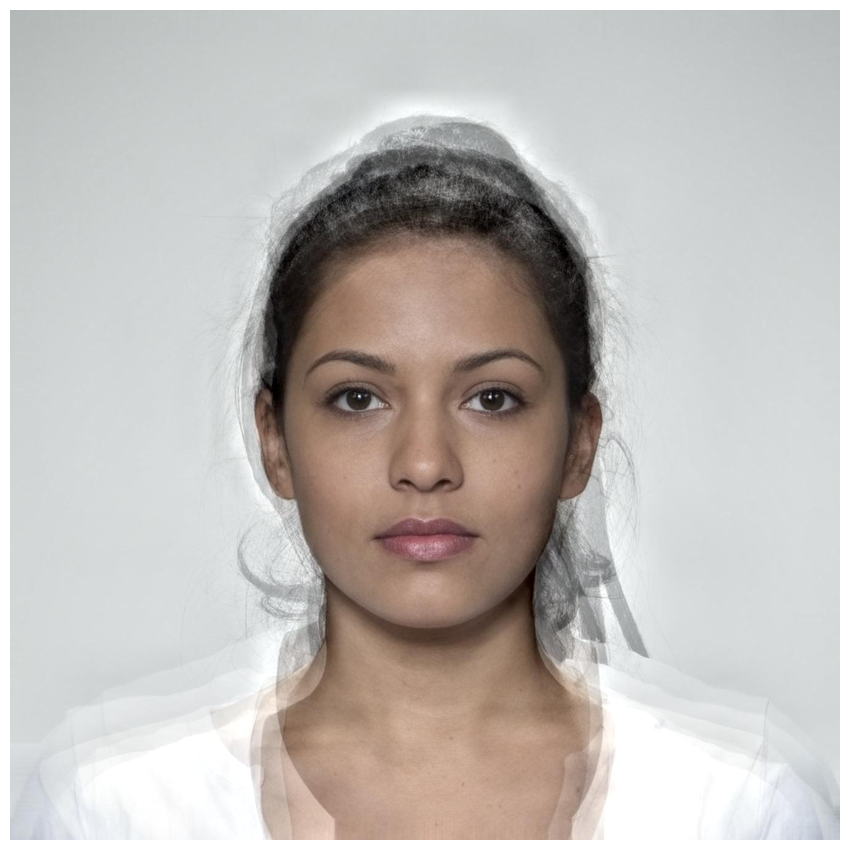
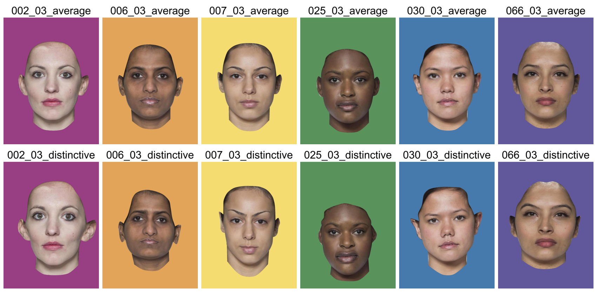
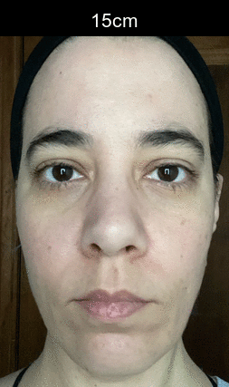

The goal of webmorphR is to make the construction of image stimuli more reproducible, with a focus on face stimuli.
This development of this package was funded by ERC grant #647910 (KINSHIP).
See articles for details on image manipulations, making figures, and making stimuli.
Installation
You can install the development version from GitHub with:
# install.packages("devtools")
devtools::install_github("debruine/webmorphR")Reproducible stimulus construction
Load 6 faces from the CC-BY licensed Face Research Lab London Set.
face_set <- demo_stim("london", "002|006|007|025|030|066")These faces already have webmorph templates, so you can make an average.
avg <- avg(face_set)Create a figure showing the individual faces and the average with the template superimposed.
# plot individual faces in a grid the same height as the average face
ind <- plot(face_set, ncol = 2, padding = 30, external_pad = FALSE,
maxwidth = avg$avg$width, maxheight = avg$avg$height)
# draw template on the face, join with individual grid, and plot
tem <- draw_tem(avg, pt.alpha = 0.5, line.alpha = 0.25)
c(ind, tem) %>% plot(nrow = 1)
Transform images to make them more average.
dist_avg <- trans(trans_img = face_set,
from_img = face_set,
to_img = avg,
shape = c(distinctive = -0.5, average = 0.5),
color = 0, texture = 0)Mask and crop images.
rainbow <- c("#983E82", "#E2A458", "#F5DC70", "#59935B", "#467AAC", "#61589C") %>% rep(each = 2)
stimuli <- dist_avg %>%
mask(c("face", "neck", "ears"), fill = rainbow) %>%
crop(0.6, 0.8)Save your stimuli
write_stim(stimuli, dir = "mystimuli")Easily create figures to illustrate your research.

Automatic Delineation
Read in images with webmorph templates, or automatically delineate images with Face++{target="_blank“}. Auto-delineation requires a free API key from Face++; averaging and transforming require a webmorph{target=”_blank"} account.
imgdir <- system.file("extdata/zoom", package = "webmorphR")
stimuli <- read_stim(imgdir, "jpg") %>%
resize(1/2) %>%
auto_delin()
draw_tem(stimuli) %>% plot()
Now you can procrustes align the images and crop them all to the same dimensions.
aligned <- align(stimuli, procrustes = TRUE, patch = TRUE) %>%
crop_pad(100, 10, 10, 10)
plot(aligned)
You can even add image labels and turn your images into an animated gif.
aligned %>%
pad(40, 0, 0, 0, fill = "black") %>%
label(c("15cm", "30cm", "45cm", "60cm"), color = "white") %>%
animate(fps = 2)